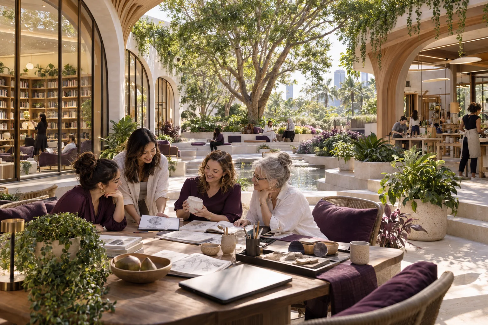

Choose meaningful work
Explore an enterprise idea, a business improvement, a succession opportunity or a community challenge. The original catalogue and linked project library offer places to start.

You can begin with a question, a skill or a problem worth solving. A company of your own can come later.
500 Queens starts with people: women imagining a different working life, experienced leaders with something to share, researchers with a difficult problem and business owners considering what comes next. The invitation includes people entering work, returning after time away and changing direction. Curiosity and experience both belong here.
The proposal is to connect these people around useful enterprises and real responsibility. Community, culture and learning provide accessible ways in. Mentoring, practical projects and capital can then help turn participation into leadership. At least 500 women developing and exercising leadership in Australia is the starting ambition, with room to grow beyond it.
AI-generated concept illustration.
An opening conversation would ask what a good working life looks like, which problems people want to address and what would help them participate. A Brisbane gathering and online introduction could connect women's networks, employers, universities, TAFEs and local organisations around those questions.
Gather the essentials once: location, interests, availability, support sought, contributions offered and permission to follow up. Use those answers to connect each person with a group, a project and a next working session. The GAJRA approach begins by listening, then agreeing something useful to do together.
Explore an enterprise idea, a business improvement, a succession opportunity or a community challenge. The original catalogue and linked project library offer places to start.
Describe the need, the work, expected time, payment or voluntary basis, a willing contact and the next step. Bring a customer, business owner or affected community into the conversation early.
Match willing participants and mentors around a small deliverable and a review date. A demonstration, a customer conversation or a costed proposal gives the group something to examine.
Turn specific offers of organising, teaching, finance, relationship building and fundraising into agreed responsibilities. Put paid roles into the operating request and recruit when the work is funded.
Repeated workshops, local groups and online participation would allow the community to grow beyond the people who fit into one room. Funded places, selection criteria, timing and future intakes should be clear when a programme is ready to open. Demand that cannot yet be met becomes evidence for the next funding request.
A useful rhythm is simple: a clear question, an agreed action, a result to examine and a revision. Share demonstrations and participant-approved stories. Celebrate learning as well as delivery, and keep the next opportunity visible. Care and C-Hour add ways for young people and community contributors to learn alongside developing women leaders.